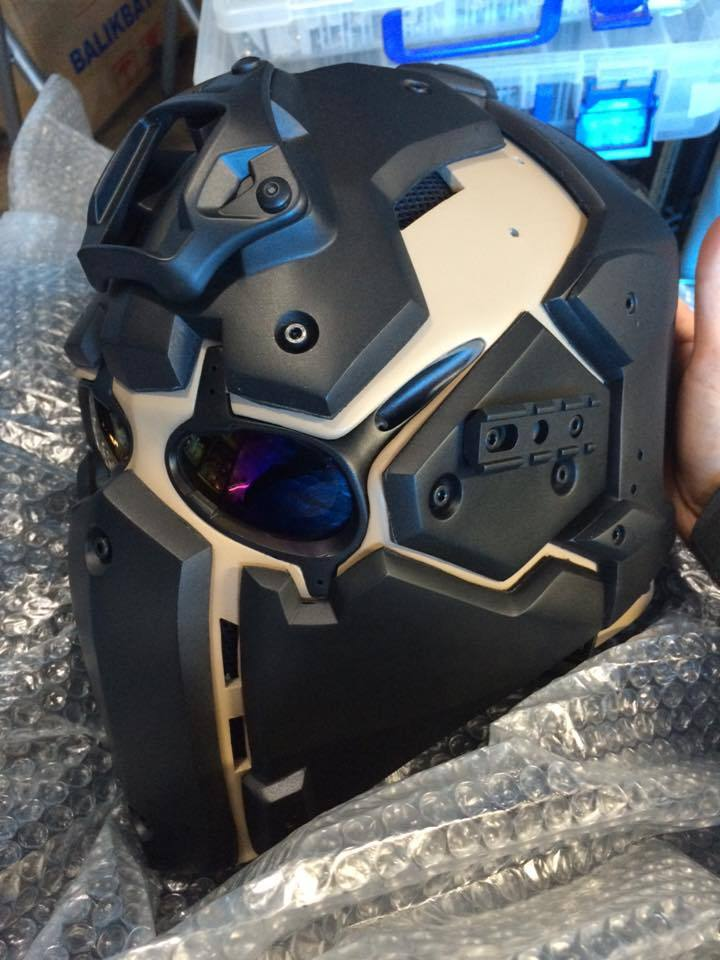
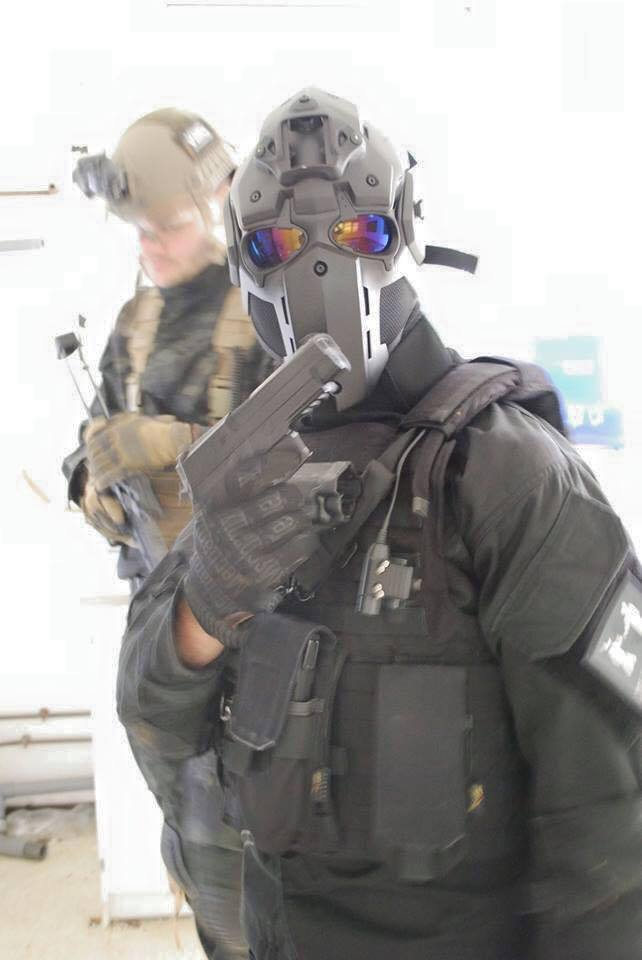

Devtac Japan
Although they look like airsoft masks, these are ballistic, bullet resistant helmets. They did post several videos of the mask stopping .357 Magnum rounds. The configurations vary and Devtac does makes several models, some with more exposed sections which I think are used for airsoft. The mask in the first photo will be at SHOT Show 2016; their Ronin Level IIIA. They don’t list a price point since everything is through their Facebook page for the time being but some comments have mentioned the Level IIIA is around $1,400. (GRH)
They also sell a polycarb airsoft version.